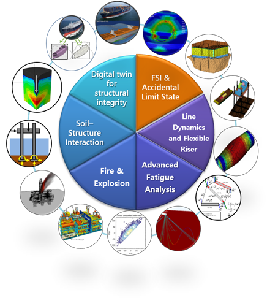
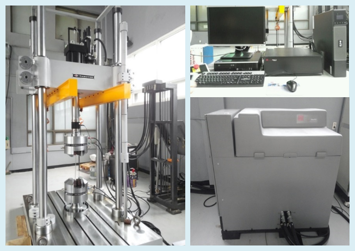
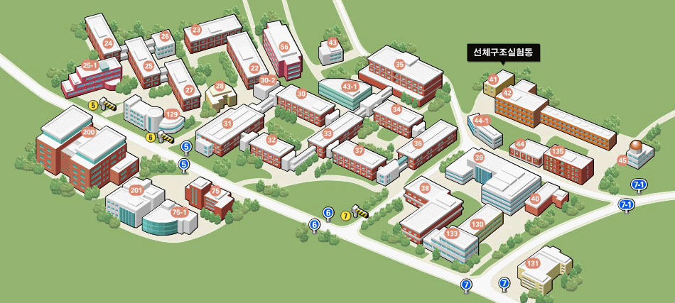

Research Goal
|
|
Research interest
Long efforts on offshore structures have come to fruition nowadays. Procedures of systematic fire and explosion risk analysis of offshore facilities has been proposed based on high-fidelity fire and gas dispersion simulations and nonlinear structural analysis. Innovative improvements on global dynamic and local structural analysis of flexible riser have been achieved in terms of accuracy and efficiency. Subsea soil-structure interaction is also important issue for predicting the accurate behavior of jack-up type structure and riser at touchdown zone. For these topics, our lab pursues interdisciplinary researches. |
|
Research Topics
|
 |
50ton Fatigue test facilities |
|---|
|  |
Cryogenic Chamber |
 |
| ANSYS Academic Research | University MD FEA Bundle | PLAXIS 3D | LS-DYNA 4CPU Academic |
|---|---|---|---|
| DNV SESAM Package | KFX Academic License | SIMULIA Academic ABAQUS | FLACS Academic License |
| 서울특별시 관악구 관악로 1, 서울대학교 조선해양공학과 41동 201호 Bldg. 41, Room 201, Dept. of Naval Architecture and Ocean Engineering, Seoul National University, 1 Gwanak-ro, Gwanak-gu, Seoul, Korea Tel. 02-880-7336 |
|  |